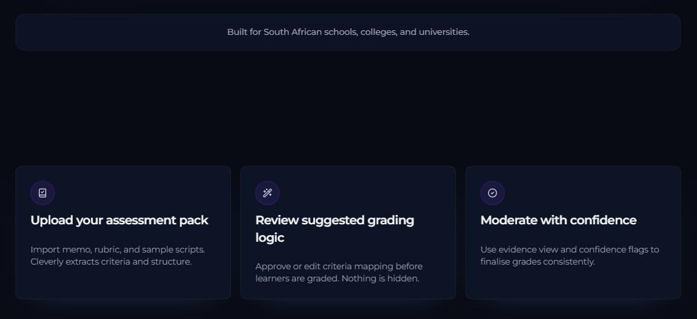
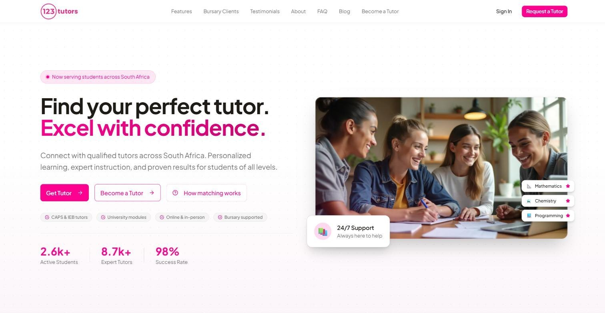

I build the systems companies trust with money, students and members.
AI product engineer and CTO building production LLM products and the insurance systems around them, from AI grading and tutoring to forms, e-signing and single sign-on. Engineering at Alpha Insure by day, building 123tutors, Cleverly AI and Oryares Solutions on my own.
Three kinds of work, one standard.
Engage a single discipline or the whole arc. Each is built for real constraints: compliance, tight margins and no room for downtime.
Platform and identity
- Centralised SSO and OAuth2/PKCE gateways
- AWS Lambda, Cognito, KMS-signed tokens
- Security hardening and dependency auditing
- POPIA-aware architecture
AI products
- LLM features on Claude and Bedrock
- Rubric-aligned grading with human review
- RAG, embeddings and tiered OCR pipelines
- Vendor-neutral provider layers and cost telemetry
InsurTech and operations
- CRMs, policy portals and booking systems
- Actuarial pricing tooling and UAT automation
- Claims, documents and e-signature flows
- Billing runs and bank reconciliation on AWS
A record of what each build had to solve.
Ten systems, each with the problem, the decisions and the result. Six below, the rest on the work page.

2025Cleverly AI
AI-assisted grading built to be trusted by teachers: rubric-aligned, evidence-linked, with a vendor-neutral provider layer.
SSO Authentication Gateway
One login for every application across an insurance, hospitality and fitness group.

2026123tutors
CTO of the tutoring platform: Bubble to Next.js migration, Supabase, and a Claude-powered AI tutor.
The Operations Layer
CRMs, policy portals, bookings and an automated billing run for three very different businesses.
Akur8 UAT Runner
Bulk-validates an actuarial motor rating API before it ships. Solo build, in active use.
Tutor Vetting Automation
KYC, biometrics and AML screening that turned a five-day manual review into a two-hour automated one.
One full-time role, three ventures of my own.
Alpha Insure is my day job. The rest is what I build and own alongside it.
Alpha Insure
Full stack developer. SSO, CRMs, policy portals, booking and billing systems for an insurance group and its sister businesses.
123tutors
A tutoring platform migrated from Bubble to Next.js and extended with an AI tutor.
Cleverly AI
AI-assisted grading for schools and colleges, in private pilot.
Oryares Solutions
AI implementation, fractional CTO and product engineering, taken on selectively.
Oryares Solutions
AI implementation and fractional CTO work for small teams. Friends of Cinema delivered through the studio.
Cleverly AI
Architected the grading platform: Next.js, Express, Supabase, Claude with RAG, tiered OCR and cost telemetry. Director at board level.
123tutors
Led the Bubble to Next.js migration, a security review, and shipped the Claude-powered AI tutor.
Alpha Group
SSO gateway, HR portal, underwriting CRMs, booking and membership platforms. Policy processing 60% faster, data-entry errors down 85%.
Reflex Solutions
24/7 enterprise network operations: FortiGate, F5, Cisco, PRTG, and Python automation for diagnostics.
Everything a hiring manager asks for.
CV, code, profile and the stack, in one place.
Honest numbers. Where it says one year, it means one year.
Let us build something that has to work.
Open to senior and lead full stack, AI engineering, platform and identity roles, and fractional CTO engagements, remote or Johannesburg-based. Contract or full-time.
+27 79 905 6758 / Johannesburg, South Africa / English and French